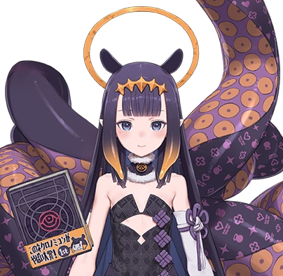

Ina
About
Ninomae Ina'nis is a VTuber associated with hololive. She is known for her artwork, gaming streams and relaxed personality.
Information
Name: Ninomae Ina'nis
Birthday: May 20
Debut: September 13, 2020
Generation: hololive English -Myth-
My Favorite Things
- Drawing
- Gaming
- Art
- Her Streams
